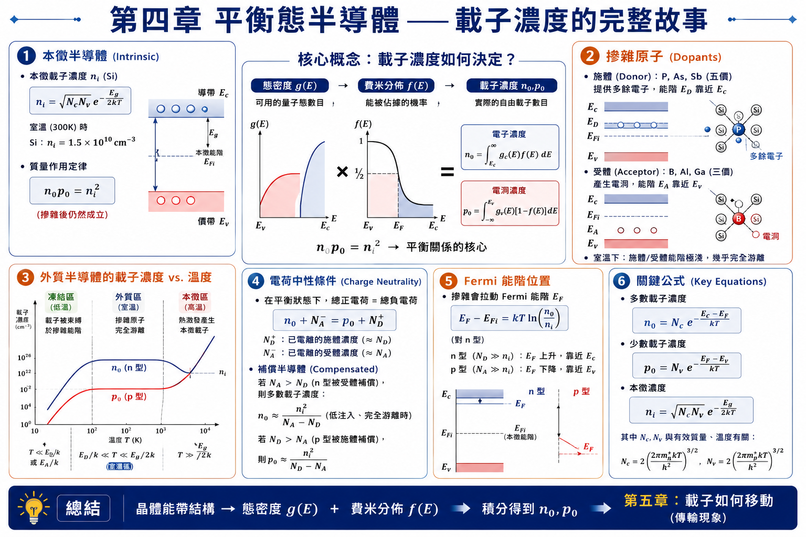
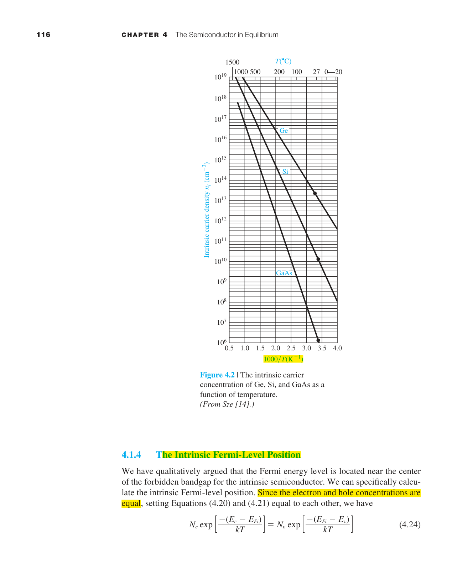
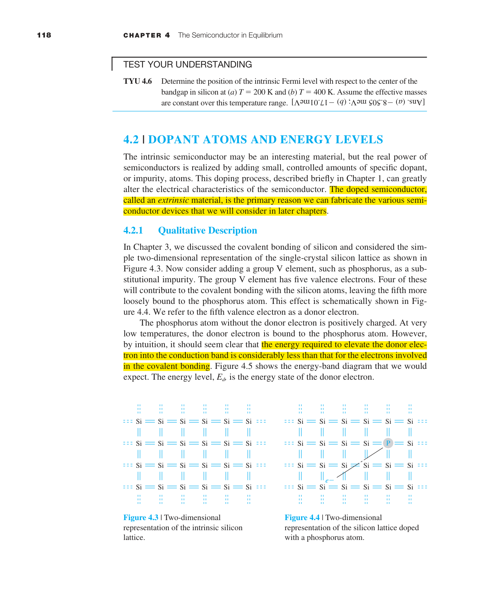
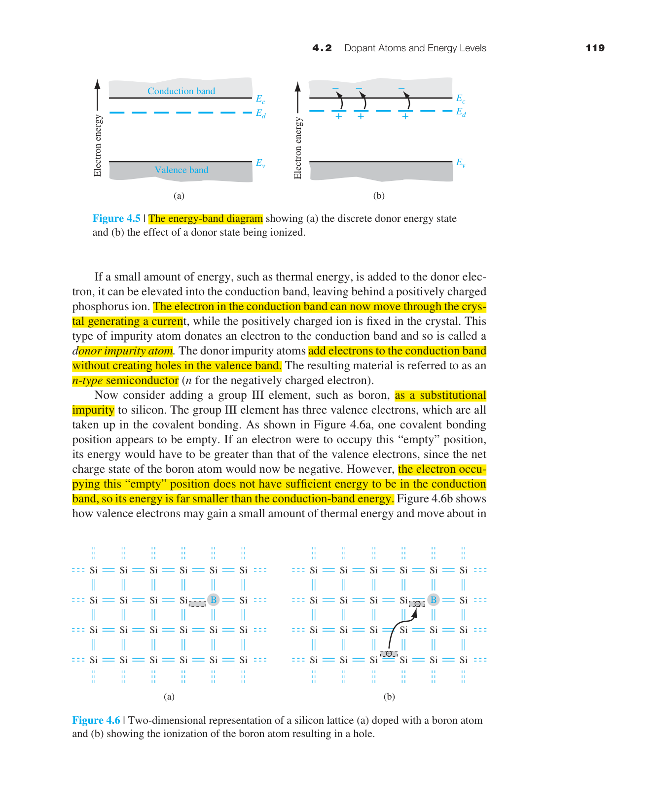
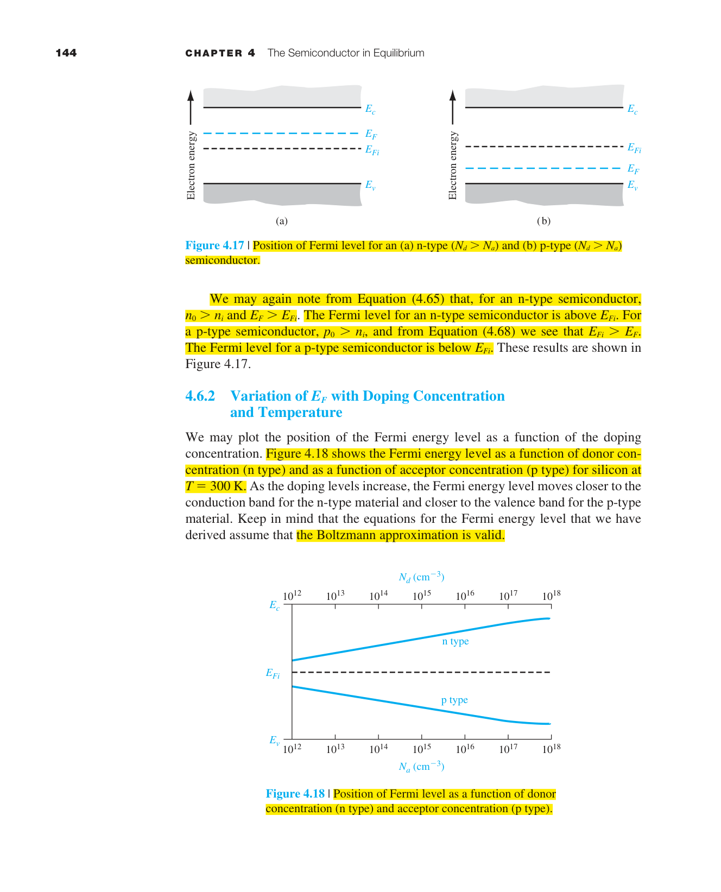
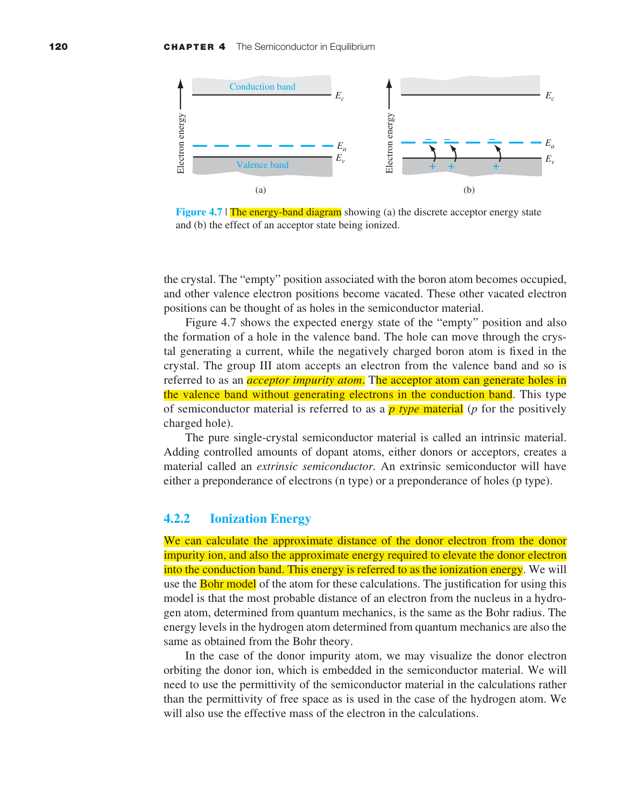
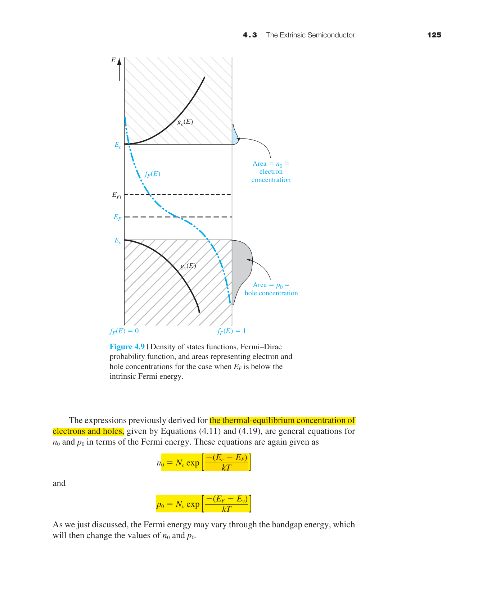

平衡態半導體
前面三章建立了量子力學和固態理論的基礎：我們學會了薛丁格方程、能帶理論、態密度、以及 Fermi-Dirac 統計。現在我們終於要把這些工具全部組裝起來，回答半導體元件物理中最核心的問題：
在熱平衡下，半導體中有多少電子？有多少電洞？Fermi 能階在哪裡？
這三個問題的答案是所有半導體元件分析的起點。無論你要設計一個 pn 接面、一個 MOSFET、還是一個太陽能電池，第一步永遠是計算熱平衡載子濃度。
本章的邏輯鏈非常清晰：態密度 × Fermi 機率 → 積分 → $n_0$ 和 $p_0$ → $n_i$ → 質量作用定律 → 加入摻雜 → 電荷中性 → 解出 Fermi 能階位置。每一步都建立在前一步的基礎上。

4.1.1 平衡態電子與電洞的分布
在第三章中我們得到了兩個關鍵函數：態密度 $g_c(E)$（導帶中每單位能量、每單位體積有多少個「空位」可以給電子坐），以及 Fermi-Dirac 機率 $f_F(E)$（能量為 $E$ 的量子態被電子佔據的機率）。
要知道導帶中某個能量 $E$ 處的電子濃度，就是把這兩個函數相乘：
物理圖像（圖 4.1）：態密度 $g_c(E)$ 從 $E_c$ 開始以 $\sqrt{E-E_c}$ 的形式增長——能量越高，可用的量子態越多。但 Fermi-Dirac 機率 $f_F(E)$ 隨能量指數衰減——能量越高的態越難被佔據（因為電子傾向待在低能態）。兩者相乘的結果是一個先升後降的鐘形曲線：在 $E_c$ 附近，$g_c$ 還很小；在遠高於 $E_c$ 處，$f_F$ 已衰減到幾乎為零。電子主要分布在導帶底部往上約 $kT$（室溫約 0.026 eV）的範圍內。

將 $n(E)$ 從 $E_c$ 積分到 $\infty$，就得到導帶中的總電子濃度 $n_0$。對於電洞，同理：價帶態密度 $g_v(E)$ 乘以「沒有電子的機率」$[1-f_F(E)]$，積分得到 $p_0$。
4.1.2 $n_0$ 與 $p_0$ 的公式推導
對於非簡併半導體（即 $E_F$ 位於能隙中，且距 $E_c$ 和 $E_v$ 都超過 $3kT$），$E_c - E_F \gg kT$，因此 $f_F(E) \approx \exp[-(E-E_F)/kT]$——這就是 Boltzmann 近似。這個近似使積分可以解析求解，得到本章最重要的兩個公式：
其中 $N_c$ 和 $N_v$ 分別是導帶和價帶的有效態密度（effective density of states）：
$N_c$ 和 $N_v$ 隨溫度以 $T^{3/2}$ 增加。直觀理解：溫度越高，電子的熱能越大，能夠「看到」越高能量的量子態，等效態密度因此增大。
公式 (4.11) 的直觀理解：$n_0$ =（等效態密度）×（Boltzmann 機率因子）。$N_c$ 告訴我們導帶底部有多少「座位」；$\exp[-(E_c-E_F)/kT]$ 告訴我們這些座位被佔據的機率。$E_c - E_F$ 越大（Fermi 能階離導帶越遠），機率越小→電子越少。這完全類似化學反應中的 Arrhenius 公式。
$n_0 = 2.8\times10^{19} \cdot e^{-0.25/0.0259} = 2.8\times10^{19} \cdot e^{-9.65} = 1.8\times10^{15}$ cm⁻³。
注意：$E_c-E_F$ 僅 0.25 eV，但 $n_0$ 比 $N_c$ 小了四個數量級——這是因為 Boltzmann 因子指數衰減的威力。
4.1.3 本徵載子濃度 $n_i$
本徵半導體（intrinsic semiconductor）是指完全沒有雜質的完美晶體。在本徵半導體中，每一個被激發到導帶的電子，都在價帶中留下一個電洞，因此 $n_0 = p_0 \equiv n_i$。
將 $n_0 p_0$ 相乘，$E_F$ 被消去（注意 $n_0$ 含 $e^{+E_F/kT}$，$p_0$ 含 $e^{-E_F/kT}$），得到一個與 $E_F$ 無關、僅取決於材料和溫度的常數：
這就是赫赫有名的質量作用定律（mass action law）。它的物理意義是：在熱平衡下，$n_0$ 和 $p_0$ 的乘積是一個常數。如果你用摻雜提高 $n_0$（n 型），$p_0$ 必定以 $n_i^2/n_0$ 的比例下降。這就像化學平衡中的 $K_{eq}$——你可以改變反應物濃度，但平衡常數不變。

| 材料 | $E_g$ (eV) | $n_i$ at 300K (cm⁻³) | 直觀理解 |
|---|---|---|---|
| Ge | 0.66 | $2.4\times10^{13}$ | 能隙最小→最多本徵載子 |
| Si | 1.12 | $1.5\times10^{10}$ | 能隙適中 |
| GaAs | 1.42 | $1.8\times10^{6}$ | 能隙最大→本徵載子極少（少了 4 個數量級！） |
$N_c \propto T^{3/2}$ → $N_c(400)/N_c(300)=(400/300)^{3/2}=1.54$
$e^{-E_g/2kT}$ 從 $e^{-21.6}$ 變為 $e^{-16.2}$ → 增加了 $e^{5.4}\approx 220$ 倍
故 $n_i(400\text{K}) \approx 1.54 \times 220 \times 1.5\times10^{10} \approx 5\times10^{12}$ cm⁻³
溫度僅升 100°C，$n_i$ 增加了 300 倍！這就是為什麼半導體元件對溫度極其敏感。
4.1.4 本徵 Fermi 能階 $E_{Fi}$
在本徵半導體中，令 $n_0 = p_0 = n_i$ 代入 (4.11) 和 (4.19)，可解得本徵 Fermi 能階的位置：
$E_{Fi}$ 非常接近能隙中央（midgap）。對 Si，$m_p^* > m_n^*$，修正項為負（約 −0.013 eV），所以 $E_{Fi}$ 略低於正中央。
有了 $n_i$ 和 $E_{Fi}$ 作為基準，我們可以把 $n_0$ 和 $p_0$ 改寫成極其實用的形式——不再需要知道 $N_c$ 和 $N_v$ 的具體數值：
$E_F > E_{Fi}$ → $n_0 > n_i > p_0$ → n 型（多數載子為電子）
$E_F < E_{Fi}$ → $p_0 > n_i > n_0$ → p 型（多數載子為電洞）
$E_F$ 每遠離 $E_{Fi}$ 一個 $kT$（約 0.026 eV），多數載子濃度就增加 $e$ 倍（約 2.72 倍）。
4.2 摻雜原子與能階
純淨的本徵半導體導電性很差——Si 的 $n_i$ 只有 $10^{10}$ cm⁻³，而 Si 的原子密度是 $5\times10^{22}$ cm⁻³，也就是說每 $5\times10^{12}$ 個原子中才有一個自由電子。要靠本徵載子做元件是完全不現實的。
摻雜（doping）是半導體技術的基石：刻意加入極少量的特定雜質原子，精確控制導電性。典型的摻雜濃度是 $10^{14}$–$10^{18}$ cm⁻³——相比 Si 原子密度仍然極低（約百萬分之一到百分之一），但已經比 $n_i$ 高出 4 到 8 個數量級。

施體（Donor）— n 型摻雜
用第 V 族元素（P、As、Sb）取代 Si 原子。V 族元素有 5 個價電子。其中 4 個與相鄰 Si 形成共價鍵；第 5 個電子多餘出來，只被施體離子微弱束縛。這個多餘電子的束縛能（游離能）極小——對 Si 中的 P 僅約 0.045 eV。室溫下 $kT\approx0.026$ eV，熱能足以使絕大部分施體電子脫離束縛進入導帶，成為自由電子。施體離子本身固定在晶格中，帶正電。
受體（Acceptor）— p 型摻雜
用第 III 族元素（B、Al、Ga）取代 Si。III 族元素只有 3 個價電子，與相鄰 Si 形成共價鍵時缺少一個電子。這個空缺可以被鄰近 Si-Si 鍵中的電子填補——相當於從價帶中「接受」一個電子，在價帶中留下一個電洞。受體能階距價帶頂部也僅約 0.045 eV，室溫下幾乎全部游離。
| 雜質 | 族別 | 類型 | Si 中能階位置 | 束縛能 (eV) |
|---|---|---|---|---|
| P（磷） | V | 施體 | $E_c - 0.045$ eV | 0.045 |
| As（砷） | V | 施體 | $E_c - 0.054$ eV | 0.054 |
| Sb（銻） | V | 施體 | $E_c - 0.039$ eV | 0.039 |
| B（硼） | III | 受體 | $E_v + 0.045$ eV | 0.045 |
4.3 外質半導體
加入摻雜後的半導體稱為外質半導體（extrinsic semiconductor）。摻雜濃度記為 $N_d$（施體濃度）和 $N_a$（受體濃度）。
外質半導體的三個溫度區域：
① 凍結區（Freeze-out）：極低溫（$T < 50$ K）。$kT$ 遠小於雜質束縛能（0.045 eV）→大部分雜質未游離→$n_0$ 隨 $T$ 急劇上升（$\propto e^{-E_d/2kT}$）。載子濃度遠低於 $N_d$。
② 外質區（Extrinsic）：室溫附近（$50 < T < 500$ K）。$kT$ 足以完全游離所有雜質→$n_0 \approx N_d$（n 型）。同時 $n_i$ 仍然很小→$n_0$ 基本不隨溫度變化。這是半導體元件的正常操作區域。
③ 本徵區（Intrinsic）：高溫（$T > 500$ K）。$n_i(T)$ 指數增長→$n_i \gg N_d$→本徵載子濃度遠超過摻雜提供的載子→$n_0 \approx n_i$。此時摻雜失去意義——材料表現得像本徵半導體。
為什麼這三個區域很重要？① 凍結區：低溫電子元件（如太空探測器）必須考慮載子載子凍結。② 外質區：所有正常操作的半導體元件都在此區域。③ 本徵區：功率元件在高溫下可能進入本徵區→漏電流急劇增大→元件失效。
外質半導體的一個重要參數區分是簡併（degenerate）與非簡併（nondegenerate）：
- 非簡併：$E_F$ 在能隙中，距能帶邊緣 $> 3kT$。Boltzmann 近似有效。大多數實際元件都在此範圍。
- 簡併：摻雜濃度極高（$>10^{19}$ cm⁻³），$E_F$ 進入導帶或價帶。必須使用完整的 Fermi-Dirac 積分。簡併半導體的行為更接近金屬。

4.4 施體與受體的統計
嚴格來說，並非所有雜質原子都一定游離——這取決於溫度和 Fermi 能階的位置。游離施體濃度的精確表達式為：
其中 $g_d = 2$ 是施體基態的簡併度（電子可以自旋向上或向下佔據施體能階）。當 $E_F$ 遠低於 $E_d$ 時（n 型半導體的典型情況），分母中的指數項很小 → $N_d^+ \approx N_d$——這就是完全游離。
對受體同理：
$g_a = 4$（價帶頂部的雙重簡併 + 自旋簡併）。當 $E_F$ 遠高於 $E_a$ 時（p 型的典型情況）→ 完全游離。
凍結溫度的定量估算
什麼溫度下，一半的施體已經游離？令 $N_d^+ = N_d/2$，代入 (4.53)：$1 + 2\exp[(E_F-E_d)/kT] = 2$→$\exp[(E_F-E_d)/kT] = 0.5$→$E_d - E_F = kT\ln 2 \approx 0.69 kT$。對 Si 中的 P（$E_d = E_c - 0.045$ eV）：若 $E_F \approx E_c - 0.02$ eV（半游離時的近似），則 $0.025 \approx 0.69 kT$→$T \approx 0.025/(0.69\times8.617\times10^{-5}) \approx 420$ K。但實際上因為 $E_F$ 本身隨溫度變化，凍結開始的溫度更低（∼50–100 K）。
工程意義：在太空應用中（衛星電子元件），環境溫度可低至 −55°C（218 K）——仍在外質區。但在深空探測器的陰影面，溫度可降至 < 30 K——必須使用特殊設計（如更高的摻雜濃度或不同的材料）來避免載子凍結。
4.5 電荷中性
熱平衡下的半導體整體必須是電中性的——總負電荷等於總正電荷。這給出本章第三個核心方程：
物理意義：負電荷來源有二：導帶中的電子 $n_0$，以及游離的受體離子 $N_a^-$（受體接受了電子，帶負電）。正電荷來源也有二：價帶中的電洞 $p_0$，以及游離的施體離子 $N_d^+$（施體給出了電子，帶正電）。
結合 (4.60) 和質量作用定律 $n_0 p_0 = n_i^2$，以及完全游離假設（室溫下合理），可以對任何摻雜情況求解 $n_0$ 和 $p_0$：
n 型半導體（$N_d \gg n_i$，$N_a \approx 0$）
p 型半導體（$N_a \gg n_i$，$N_d \approx 0$）
補償半導體（$N_d \neq 0$ 且 $N_a \neq 0$）
當 n 型和 p 型雜質同時存在時，它們會互相「抵消」——電子從施體落入受體能階，等效淨摻雜為 $|N_d - N_a|$。
$n_0 \approx N_d = 10^{16}$ cm⁻³
$p_0 = n_i^2/n_0 = (1.5\times10^{10})^2 / 10^{16} = 2.25\times10^4$ cm⁻³
多數載子（電子）比少數載子（電洞）多了 12 個數量級！在 n 型 Si 中，電洞幾乎不存在——這就是為什麼我們說「多數載子主導導電性」。
4.6 Fermi 能階的位置

有了 $n_0$（從摻雜濃度得知）和 $n_i$（從材料參數得知），就可以反推 Fermi 能階的位置。這是本章的收尾——把前面所有的推導串在一起：
物理圖像：Fermi 能階是系統的「電化學勢」。當你加入施體雜質（給予電子），系統的化學勢上升→ $E_F$ 向 $E_c$ 移動。加入受體（拿走電子），化學勢下降→ $E_F$ 向 $E_v$ 移動。摻雜濃度每增加 10 倍，$E_F$ 移動約 $kT\ln10 \approx 0.06$ eV（室溫）。

$E_F - E_{Fi} = 0.0259 \cdot \ln(10^{16}/1.5\times10^{10}) = 0.0259 \cdot 13.4 = 0.347$ eV
$E_{Fi}$ 約在能隙中央下方 0.013 eV → $E_c - E_F \approx 1.12/2 + 0.013 - 0.347 \approx 0.21$ eV。
Fermi 能階距導帶底部僅 0.21 eV——摻雜有效地把 $E_F$ 從能隙中央「拉」向了導帶。
溫度對 Fermi 能階的影響
圖 4.7 的一個重要特徵是：高溫時所有曲線都趨近 $E_{Fi}$。這是因為當溫度升高，$n_i$ 急劇增加（$\propto e^{-E_g/2kT}$）。當 $n_i$ 超過 $N_d$（或 $N_a$）時，本徵載子主導，半導體回歸本徵行為——$E_F \to E_{Fi}$。對 $N_d=10^{14}$ cm⁻³ 的 Si，這大約發生在 500 K 左右。

本章摘要
- 載子濃度公式：$n_0 = N_c e^{-(E_c-E_F)/kT}$，$p_0 = N_v e^{-(E_F-E_v)/kT}$。核心在於 Boltzmann 近似——適用於非簡併半導體。
- 有效態密度 $N_c$, $N_v$：將複雜的能帶態密度簡化為等效能階的態密度，隨 $T^{3/2}$ 增加。Si 室溫：$N_c=2.8\times10^{19}$ cm⁻³。
- 質量作用定律 $n_0 p_0 = n_i^2$：熱平衡下的不變量——提高一種載子濃度必然壓低另一種。這是統計力學的結果，與摻雜無關。
- $n_i$ 隨溫度指數增長：$n_i = \sqrt{N_c N_v} e^{-E_g/2kT}$。Si 從 300K 到 400K，$n_i$ 增加約 300 倍。
- 本徵 Fermi 能階 $E_{Fi}$：幾乎在能隙正中央，是判斷 n/p 型的基準。$E_F > E_{Fi}$ → n 型，$E_F < E_{Fi}$ → p 型。
- 摻雜：V 族（P, As）→ n 型；III 族（B）→ p 型。室溫下完全游離（束縛能 ∼0.045 eV vs $kT$ ∼0.026 eV）。
- 電荷中性：$n_0 + N_a^- = p_0 + N_d^+$。結合 $n_0 p_0 = n_i^2$ 可解出任何摻雜情況下的 $n_0$ 和 $p_0$。
- Fermi 能階位置：$E_F - E_{Fi} = kT\ln(n_0/n_i)$。摻雜使 $E_F$ 移動——n 型向 $E_c$，p 型向 $E_v$。高溫時 $E_F$ 回歸 $E_{Fi}$。